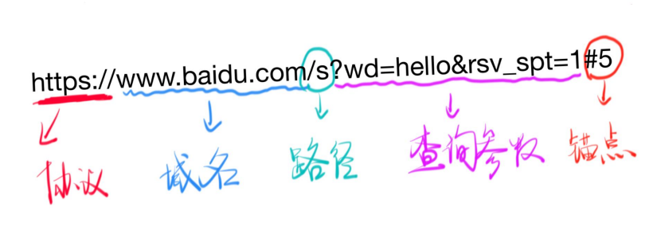
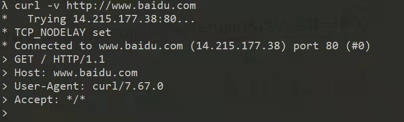
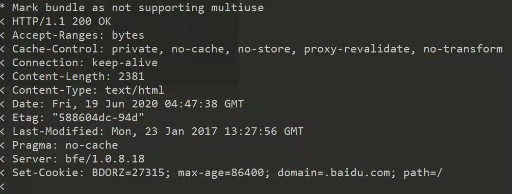

浅析URL
URL的组成部分

- URL的组成有：协议、域名或IP、端口号、路径、查询参数、锚点
协议(protocol)
- 主要有HTTP协议 和 HTTPS协议，HTTP协议默认使用80端口(port),HTTPS协议默认使用443port
域名
域名就是对IP的别称
如：baidu.con 对应的IP => ping baidu.com
也可用 nslookup baidu.com 查看域名对应的IP地址
知识点：
- 一个域名可以对应不同的IP：负载均衡
- 一个IP可以对应不同域名：共享主机
几个特殊的IP
- 127.0.0.1 表示本机IP，默认域名是localhost
- 在C:\Windows\System32\drivers\etc\hosts,可以更改本地127.0.0.1的域名
端口（port）
- 一台机器可以提供很对不同的服务
- 80端口：HTTP服务
- 443端口：HTTPS服务
- 21端口：FTP服务
- 端口的使用规则
- 0到1023(1024-1)号端口是留给系统使用的，我们一般使用1024以后的端口
- 如： http-server 默认使用 8080 端口
- 可以通过 hs . -c -1 -p 1234 指定不同的端口，如 指定栗子中1234端口
- 一共有65535个port
域名和IP 怎么对应起来？ 通过DNS
- 过程： 当你输入baidu.com
- chrome 浏览器会向电信/联通提供的DNS服务器询问 baidu.com对应的IP
- 然后 DNS回应一个IP
- 然后chrome 才会向对应的IP的80/443端口发送请求
- 请求内容是查看baidu.com/ 的首页
路径
- 如何请求不同的页面，更改路径即可
- 工具：可以使用chrome 开发者工具Network 面板看区别
查询参数
- 同一个页面，不同的内容
锚点
- 同一个内容，不同的位置
- https://developer.mozilla.org/zh-CN/docs/Web/CSS#参考书
- https://developer.mozilla.org/zh-CN/docs/Web/CSS#教程
- 注意
- 锚点不支持中文，会把中文进行编码
- 锚点不会传给服务器，服务器不会阅读# 之后的内容，不可以拿这个传参数！
curl 命令
- 用curl 可以发HTTP请求
- curl -v http://baidu.com
- curl -s -v – https://www.baidu.com
- 整个过程：
- 先请求DNS获得IP
- 连接TCP，开始发送HTTP请求
- 请求内容：>开始的内容都是请求内容

- 响应内容：

- 响应结束后，关闭TCP连接
- HTTP请求结束
All articles in this blog are licensed under CC BY-NC-SA 4.0 unless stating additionally.